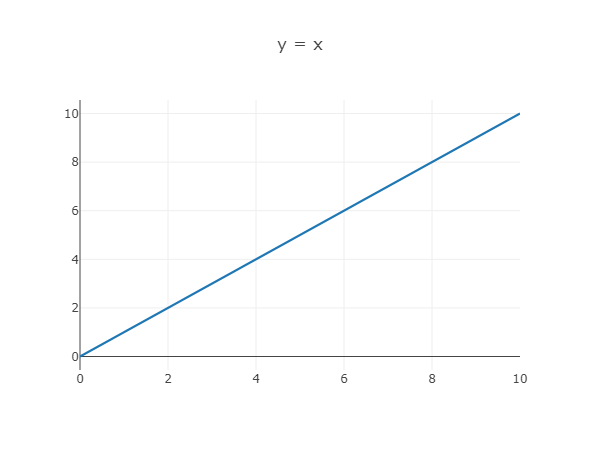
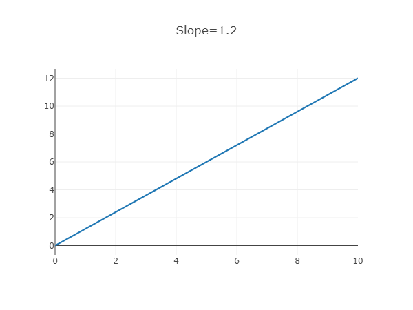
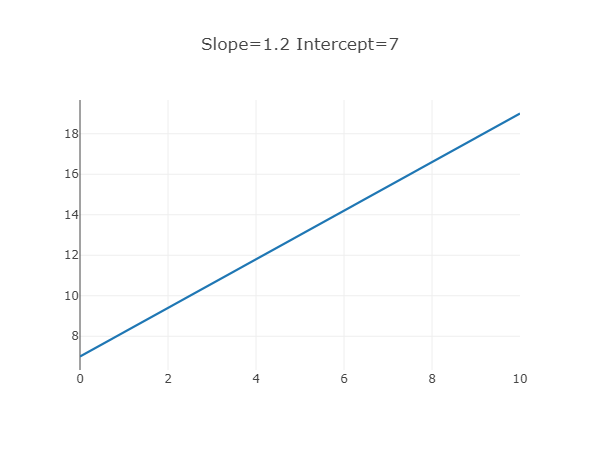

Linear means straight. A linear graph is a straight line. In general, a linear graph display function values.
The slope is the angle of the graph. The slope is the a value in a linear graph: y = ax In this example, slope = 1.2:
The Intercept is the start value of the graph. The intercept is the b value in a linear graph: y = ax + b In this example, slope = 1.2 and intercept = 2:
